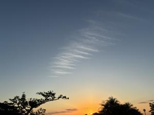
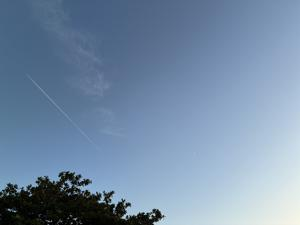

うるがいの話 ある日
最新: ソースネクスト情報流出【うるがいの話 ある日】とは 一日だけのプログです
『うるがいの話』の最新一日だけのプログで、通信料が少なく経済的だ。カニの画像をクリックすると全ての日付が載る『うるがいの話』サイトを表示します
|
|
【うるがいの話】 うるがい(ｳﾙｶﾞｲ urugai)とは、『もずくがに』の名前でとても大きくなります。 |
|---|---|
|
|
【カミマヤーの話】 猫のことを方言でマヤーといいます。カミマヤー（kamimayaa）とは、神の猫のことです。 |
|
【たながぁの音楽】 たながぁ（ﾀﾅｶﾞｰ tanagaa）とは手長えびのことで、何種類かあり大きいのは車 エビぐらいになります。 |

|
【ぶながぁの話】 ぶながぁ(ﾌﾞﾅｶﾞｰ bunagaa)とは、赤い髪の毛、赤い身体、そして身長は１ｍ２０ｃｍ ぐらい、川の蟹を食べているの目撃された。場所は沖縄県国頭郡大宜味村のと ある村僕の隣近所に住んでいる爺さんから、聞いた話です。 |
|
|
【ギーマの話】 ギーマ(giima)とは、山原の里山に咲くスズランに似た、 花を付けます。実は食べられます、 気が付くと口の周りが紫になっています。 |
2026年10月16日 (金）ソースネクスト情報流出
15:39

お？、どこかで聞いたような会社だ。おっと、私の個人情報が
流出したべ。セキュリティソフトゼロを販売している会社です
。動画の作成ソフト等を購入したりしています。早速暗証番号
を変えようとしましたが、遅くて諦めました。
3.お客様へのお願い
今回流出した可能性のある情報が悪用され、当社や関係先など
を装った不審なメール（フィッシングメール）、SMS、電話、
郵便物などがお客様に届く可能性がございます。二次被害を防
ぐため、誠にお手数をおかけいたしますが、以下の点にご協力
をお願い申し上げます。
(1)当社アカウントのパスワード変更について
お客様のアカウントを保護するため、現在ログイン時にパスワ
ードの再設定をお願いする措置を講じております。画面の案内
に従って速やかにパスワードの再設定をお願いいたします。
2026/10/16 追記
現在、パスワード再設定サイトへのアクセスが集中しており、
つながりにくい状況となっております。お客様にはご不便をお
かけしておりますことを、深くお詫び申し上げます。
すべてのお客様のパスワードはすでに変更済みであり、従来の
パスワードはご利用いただけない状態となっておりますのでご
安心ください。
恐れ入りますが、しばらく時間をおいてから、新しいパスワー
ドを再設定いただきますようお願い申し上げます。
(2)他のサービスで同じパスワードをご利用の場合
購入時登録した口座は、万が一を考えて一年前に削除の操作を
しています。また、他のサービスで同じパスワードは利用して
いません（１２桁の強固な自動生成）。
ソースネクストから、お詫びのメールはまだ届きません。
夕闇迫った快晴の空に飛行機雲が、そして三日月が（三日月は
小さくて見えないかも、飛行機雲の開始下の右側です、わずか
に白く写っている）
